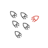
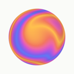
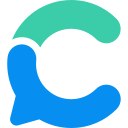
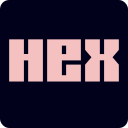
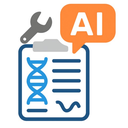
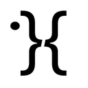
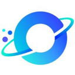
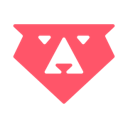

Research AI agent tools
45 research tools in the AgentScout directory, each with a link-checked listing.
Updated
There are 45 research tools: 27 open source, 6 free or freemium, 5 paid, usage-based or enterprise, 7 pricing on the maker's site.
Quick comparison Top 10 of 45 listed below. Pricing as the maker states it; blank means we don't have it.
| Tool | Pricing | Best for | Open source |
|---|---|---|---|
 Agentic Scientist | Open source | Research the web | Yes |
| Paper Search MCP | Open source | Research the web | Yes |
| LLM for Zotero | Open source | Build an agent | Yes |
| EvoScientist | Open source | Research the web | Yes |
| DeepAnalyze | Open source | Write code | Yes |
 Hyperresearch | Open source + cloud | Build an agent | Yes |
| Claude Scientific Writer | Open source | Research the web | Yes |
| AIDE ML | Open source | Write code | Yes |
| MLE-Agent | Open source | Research the web | Yes |
| MemFree | Open source + cloud | Research the web | Yes |
Tasks in this category
Agentic Scientist
Sakana AI's open-source pipeline that turns coding agents such as Claude Code, Codex, Cursor and Gemini CLI into AI scientists: from a task file they propose ideas, run and score experiments and ablations, then write the paper.
Added
Paper Search MCP
MCP server and CLI that searches and downloads academic papers from arXiv, PubMed, bioRxiv, Semantic Scholar and other sources for research agents.
Added
LLM for Zotero
Zotero plugin that adds a research agent to your library so you can ask questions about papers, compare sources and save notes without leaving the reader.
Added
EvoScientist
Self-evolving AI scientist system that autonomously explores research ideas, runs experiments and improves with growing skills and memory.
Added
DeepAnalyze
Agentic LLM from Renmin University that autonomously runs data science pipelines and produces analyst-grade research reports.
Added
Hyperresearch
Deep research harness that turns Claude Code or Codex into a research agent building a persistent, searchable wiki, with a hosted API and MCP.
Added
Claude Scientific Writer
K-Dense's general-purpose scientific writing agent for Claude that drafts research papers and documents.
Added
AIDE ML
Tree-search agent that drafts, debugs and benchmarks machine-learning code until a target metric is optimized.
Added
MLE-Agent
Pairing agent for ML engineers and researchers that builds baselines, plans with arXiv and Papers with Code, and works through Kaggle tasks.
Added
MemFree
Hybrid AI search engine that answers from your knowledge base and the web, and generates UI pages.
Added
Gemini Notebook
Google's AI research tool, formerly NotebookLM, that analyzes the sources you upload and turns them into summaries, answers and new formats.
Added

Consensus
AI academic search engine over peer-reviewed literature for finding, organizing and analyzing scientific research.
Added

Hex
Analytics platform for humans and agents, with conversational analytics, notebooks and context management for data teams.
Added
Dot
AI data analyst that answers data questions, runs root-cause analysis and sends automated reports.
Added
AskYourDatabase
Chat-with-your-database tool that answers natural-language questions over Postgres, MySQL, BigQuery, Snowflake and more with SQL and charts.
Added
Extruct AI
Company research API for AI that finds and researches companies from a 10M-company index or the live web, with sources.
Added
Fabi.ai
Discontinued: the AI data analysis platform that combined SQL, Python and AI shut down in 2026 after its team joined Omni (announced May 26, 2026); app.fabi.ai now shows a shutdown notice.
Added
OpenScience
Research agent workbench that reads the literature, writes and runs code and experiments and logs every step, with skills and connectors for databases like PubMed, UniProt and arXiv.
Added

Paper2Agent
Multi-agent system that turns a research paper and its code into a working MCP server and agent skills you can query and run.
Added
Google Deep Review
Google Research's multi-agent system that checks research papers, design docs, and legal or financial documents for logical gaps and unsupported claims.
Added
GPT Researcher
Autonomous agent that researches the web and writes cited reports.
Added
Elicit
Research assistant that finds and summarizes academic papers.
Added
STORM
Stanford system that writes Wikipedia-style articles from web research.
Added
Firecrawl
Turns websites into clean, LLM-ready data for agents.
Added
Exa
Search API built for AI agents.
Added
Tavily
Search and extraction API tuned for agents.
Added
Dashworks
AI assistant that answers questions from your company's apps and knowledge.
Added
Hebbia
AI platform for finance and legal teams that runs agents across large document sets.
Added
Kater
AI data analyst that answers business questions from your data warehouse.
Added
Agent-Reach
Lets an AI agent read and search sites like X, Reddit, YouTube and GitHub through one toolkit, without paid APIs.
Added
Deer Flow
ByteDance's open-source long-horizon agent harness that researches, codes and creates using sandboxes, memory and sub-agents.
Added

Vane
Open-source AI answering engine that searches the web and replies with sources, self-hostable.
Added

DB-GPT
Open-source agentic data assistant for querying and analyzing data with LLMs.
Added
WrenAI
Generative BI for agents: governed text-to-SQL with a semantic context layer.
Added
SurfSense
Privacy-focused, open-source NotebookLM alternative with a research agent over your sources.
Added
Feynman
Open-source research agent that searches, reads papers and writes cited reports.
Added
Deep Research (u14)
Deep research app that works with any LLM and exposes an API and MCP server.
Added
PipesHub
Open-source context layer that indexes company knowledge for AI agents and search.
Added
MiroFlow
Research agent framework with web UI supporting MiroThinker and other models.
Added
ToolUniverse
Harvard's collection of scientific tools for AI scientist agents.
Added
Anamap
AI analytics agent that investigates conversion and revenue changes using your data and release history.
Added
Kuration AI
Builds and maintains your own B2B database with AI agents that pull from registers, trade shows and maps.
Added

Bruin
Open-source, AI-powered data platform covering ingestion, pipelines and quality checks.
Added
CoChat
AI research agents that gather verified sources and organize findings.
Added
Querri
AI data analyst that cleans scattered data and answers questions in plain English.
Added
Top research repos on GitHub (26)
| Repo | GitHub stars | Licence | Last push |
|---|---|---|---|
| Agent-Reach ↗ | 98,176 | MIT | 2026-10-07 |
| 83,959 | MIT | 2026-10-20 | |
| Vane ↗ | 37,364 | MIT | 2026-09-01 |
| STORM ↗ | 31,627 | MIT | 2025-09-30 |
| 30,082 | Apache License 2.0 | 2026-10-10 | |
| DB-GPT ↗ | 20,156 | MIT | 2026-10-20 |
| 17,881 | Apache-2.0 for code; CC BY 4.0 for docs | 2026-10-20 | |
| SurfSense ↗ | 16,459 | Apache-2.0 | 2026-10-16 |
| Feynman ↗ | 9,976 | MIT | 2026-10-19 |
| EvoScientist ↗ | 4,984 | — | 2026-10-20 |
| DeepAnalyze ↗ | 4,727 | — | 2026-10-13 |
| Deep Research (u14) ↗ | 4,695 | MIT | 2026-06-18 |
| OpenScience ↗ | 4,043 | Apache License 2.0 | 2026-10-20 |
| Hyperresearch ↗ | 3,875 | — | 2026-10-10 |
| 3,837 | Apache License 2.0 | 2026-10-20 |
Top 15 of 26 by stars. Stars and licence come from each repo, checked when the listing was last verified.
All categories
Related searches
Who uses these
Best-of lists
Alternatives pages
Facts come from our directory listings; pricing is as each maker states it. Check official sites before you choose.